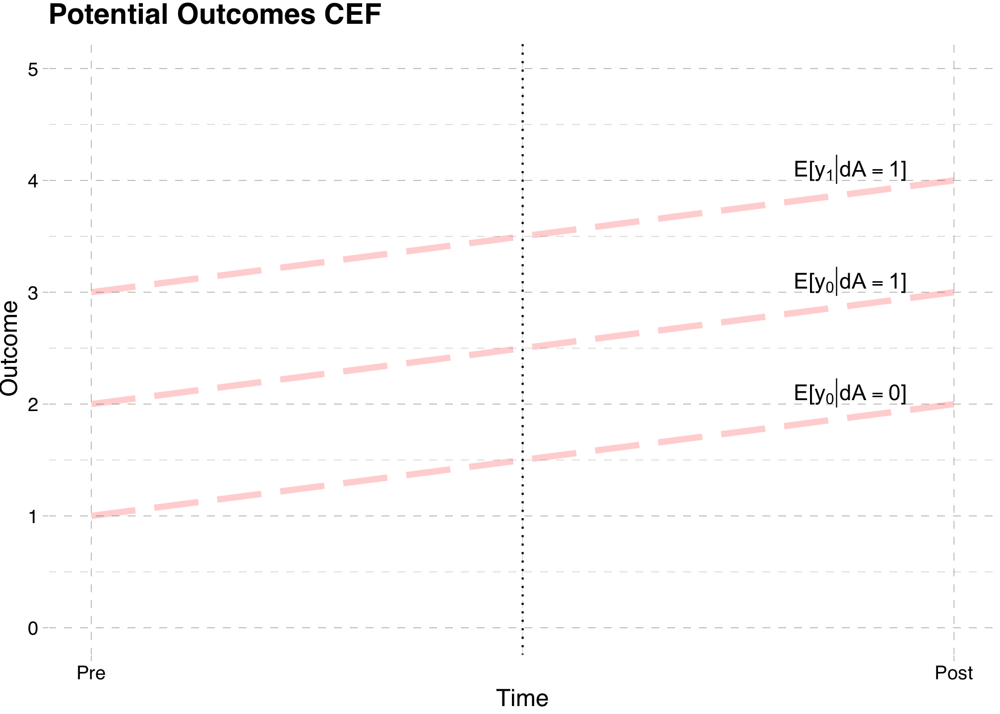
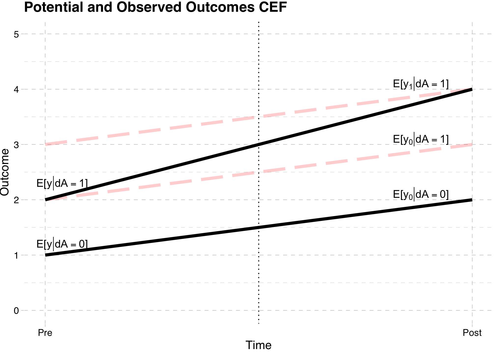
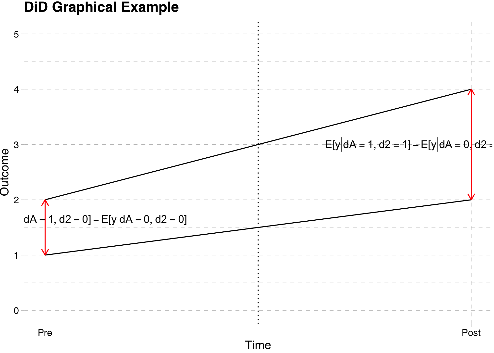
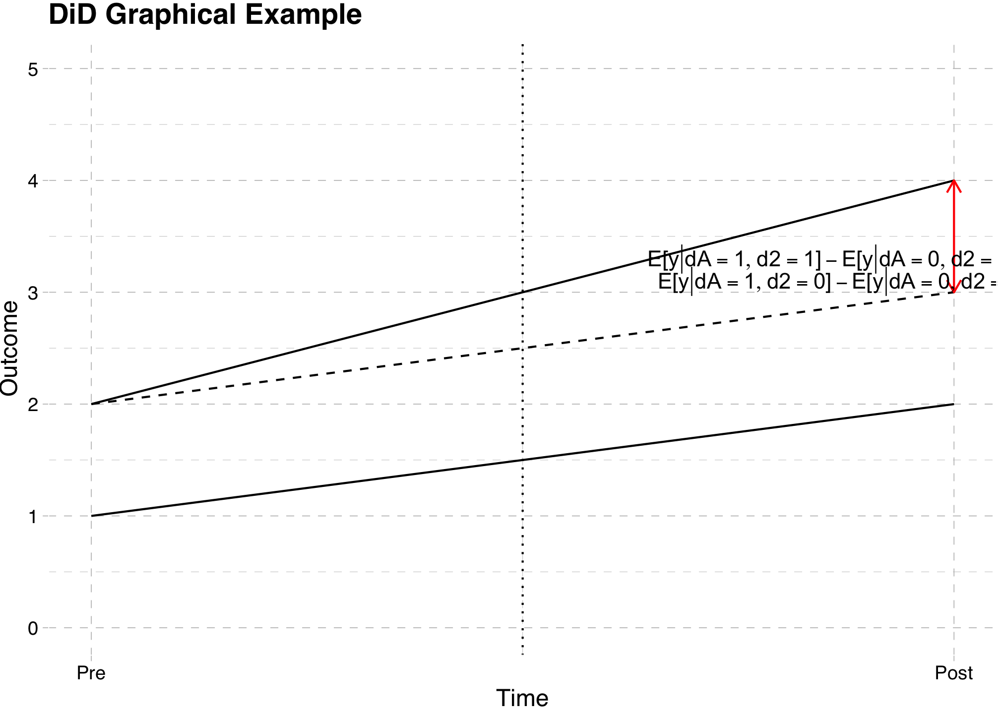

── Attaching core tidyverse packages ──────────────────────── tidyverse 2.0.0 ──
✔ dplyr 1.1.4 ✔ readr 2.1.5
✔ forcats 1.0.0 ✔ stringr 1.5.1
✔ ggplot2 3.5.2 ✔ tibble 3.2.1
✔ lubridate 1.9.4 ✔ tidyr 1.3.1
✔ purrr 1.0.4
── Conflicts ────────────────────────────────────────── tidyverse_conflicts() ──
✖ dplyr::filter() masks stats::filter()
✖ dplyr::lag() masks stats::lag()
ℹ Use the conflicted package (<http://conflicted.r-lib.org/>) to force all conflicts to become errors
Attaching package: 'magrittr'
The following object is masked from 'package:purrr':
set_names
The following object is masked from 'package:tidyr':
extract
Loading required package: carData
Attaching package: 'car'
The following object is masked from 'package:dplyr':
recode
The following object is masked from 'package:purrr':
some
Loading required package: zoo
Attaching package: 'zoo'
The following objects are masked from 'package:base':
as.Date, as.Date.numeric
Loading required package: kableExtra
Attaching package: 'kableExtra'
The following object is masked from 'package:dplyr':
group_rows
Loading required package: survivalDifference in Differences
EC655 - Econometrics
Justin Smith
Wilfrid Laurier University
Fall 2023

Introduction
Introduction
Uses a natural experiment to separate data into treatment and control groups
A policy or naturally occurring event that creates exogenous variation in a variable
Ex: Increasing the minimum wage in one state but not another
Ex: Mandated fitness policies in some schools but not others
Usually data in the form of pooled cross-sections
Individuals in 2 (or more) time periods
Could be same or different people in each time period
Can also have data in 2 groups in same time period
Individuals in 2 different states, countries
People in 2 different schools
DiD is a specific way to compare treatment to control group
Model
Setup
Imagine the following scenario
We have data on 2 groups of people (A, and B)
We have data during 2 time periods (1 and 2)
Group A was exposed to some treatment in period 2
Ex: Minimum Wages (Card and Krueger (1994))
Group A (New Jersey) increases their minimum wage in period 2
Group B (Pennsylvania) does not change its minimum wage
We observe both groups before and after the wage change
We want to measure the causal effect of the policy
Potential Outcomes
We will couch this estimator in the potential outcomes framework
Recall that observed outcomes are \[y = (y_{1} - y_{0} )w + y_{0}\]
\(y_{0}\) is outcome without treatment
\(y_{1}\) is outcome with treatment
Define the following dummy variables
\(dA = 1\) if in group A, 0 if in group B
\(d2 = 1\) of in time period 2, 0 if in period 1
\(w\) is the binary treatment indicator
Equals 1 for group A in period 2, and 0 otherwise
It is equivalent to \(dA \times d2\)
CEF
- Take difference in observed outcome between treatment and control in period 2
\[E[y|dA = 1, d2 = 1] - E[y|dA = 0, d2 = 1]\] \[ = E[y_1|dA = 1, d2 = 1] - E[y_0|dA = 0, d2 = 1]\]
\[ = E[y_1|dA = 1, d2 = 1] - E[y_0|dA = 1, d2 = 1] \] \[+ E[y_0|dA = 1, d2 = 1]- E[y_0|dA = 0, d2 = 1]\]
- This is the ATT plus selection bias
- Selection bias possibly not zero because \(y_0\) different between groups A and B in period 2
CEF
- DiD subtracts the difference in outcomes from period 1 to account for selection
\[E[y|dA = 1, d2 = 1] - E[y|dA = 0, d2 = 1]\] \[ -[E[y|dA = 1, d2 = 0] - E[y|dA = 0, d2 = 0]]\] \[ = E[y_1|dA = 1, d2 = 1] - E[y_0|dA = 1, d2 = 1] \] \[+ E[y_0|dA = 1, d2 = 1]- E[y_0|dA = 0, d2 = 1]\] \[ -[E[y_0|dA = 1, d2 = 0] - E[y_0|dA = 0, d2 = 0]]\]
- Selection bias is zero if we assume constant bias or common trends
Constant Bias
Selection bias is zero if we make the constant bias assumption
From above
\[+ E[y_0|dA = 1, d2 = 1]- E[y_0|dA = 0, d2 = 1]\] \[ -[E[y_0|dA = 1, d2 = 0] - E[y_0|dA = 0, d2 = 0]]\]
Constant bias means group difference in \(y_0\) is the same in both time periods
- Between group differences in prior period are a good counterfactual for difference in treated time period
Common Trends
An equivalent assumption is common trends assumption
Rearrange the selection bias term to be
\[+ E[y_0|dA = 1, d2 = 1]- E[y_0|dA = 1, d2 = 0]\] \[ -[E[y_0|dA = 0, d2 = 1] - E[y_0|dA = 0, d2 = 0]]\]
Says trend in \(y_0\) for group A is the same as group B
- Trend in group B is a good counterfactual for trend in group A
Both assumptions are equivalent and assume no selection bias
Visual Representation

Visual Representation

Regression
- We can model the CEF with a regression because it is a saturated model
\[y = \beta_0 + \beta_1 dA + \beta_2 d2 + \beta_3 (dA \times d2) + u\]
- The parameter \(\beta_3\) is the population difference in differences
\[\beta_3 = E[y|dA = 1, d2 = 1] - E[y|dA = 0, d2 = 1] \] \[- E[y|dA = 1, d2 = 0]- E[y|dA = 0, d2 = 0 ]\]
Recall that \(\beta_3\) is the ATT if we assume common trends or constant bias
- If those do not hold, we have selection bias
DiD Graphically

DiD Graphically

Interpretation of DiD
Under the assumption of constant treatment effects, \(\beta_{3} = ATE = ATT\)
- Constant treatment effects means it is the same for all groups
If treatment effect can vary across groups, \(\beta_{3} = ATT\)
- Card and Krueger: \(\beta_{3}\) is the effect of increase in minimum wage on employment in NJ
Estimation
Estimation
Estimation typically done by OLS \[y = \hat{\beta}_{0} + \hat{\beta}_{1}dA +\hat{\beta}_{2}d2 + \hat{\beta}_{3}(dA\times d2)+ u\]
The coefficient on \((dA\times d2)\) is the DiD estimator
It is given simply by \[\hat{\beta}_{3} = (\bar{y}_{A2} - \bar{y}_{B2}) - (\bar{y}_{A1} -\bar{y}_{B1})\]
You can also add control variables \[y= \beta_{0} + \beta_{1}dA +\beta_{2}d2 + \beta_{3}(dA\times d2)+\mathbf{x}\boldsymbol{\alpha}+ u\]
The interpretation remains similar, but estimator no longer collapses to the easy formula
Extensions
Multiple Treatments
Imagine the Card study where NJ raises the minimum wage
Suppose that NY also raises it \[y = \beta_{0} + \beta_{1}d(NJ,NY) +\beta_{2}d2 +\beta_{3}(d(NJ,NY)\times d2)+ u\]
\(d(NJ,NY)\) equals 1 if in NJ or NY
This restricts the effect to be the same in NJ and NY
Allowing for different impacts in NY and NJ
\[y = \beta_{0} + \beta_{1}dNJ+\beta_{2}dNY +\beta_{3}d2 + \beta_{4}(dNJ\times d2)+ \beta_{5}(dNY\times d2)+ u\]
Here, PA is used as the control group for both treatments
Multiple Time Periods
Imagine again the Card study with only NJ and PA
Suppose we observe 4 time periods: 2 before, and 2 after policy change
The specification could change to \[y = \beta_{0} + \beta_{1}dNJ +\beta_{2}d2 +\beta_{3}d3 +\beta_{4}d4 + \beta_{5}(dNJ\times d(3,4))+u\]
where \(d(3,4)\) is a dummy equal to 1 if time period is 3 or 4
This would impose that the treatment effect is the same in all years
A more general way to model this would be \[y = \beta_{0} + \beta_{1}dNJ +\beta_{2}d2 +\beta_{3}d3 +\beta_{4}d4 + \beta_{5}(dNJ\times d3)+ \beta_{6}(dNJ\times d4)+ u\]
\(\beta_{5}\) is the treatment effect in time period 3
\(\beta_{6}\) is the treatment effect in time period 4
Multiple Treatments and Time Periods
In this most general case, the specification is \[y = \beta_{0} + \mathbf{dG}\boldsymbol{\beta_{1}} +\mathbf{dT}\boldsymbol{\beta_{2}}+\mathbf{z}\boldsymbol{\beta_{3}}+ u\]
Where
\(\mathbf{dG}\) is a set of group dummies
\(\mathbf{dT}\) is a set of time dummies
\(\mathbf{z}\) are interaction between the time and group dummies post treatment
\(\mathbf{z}\) could also be a scalar equal to 1 for all groups and time periods post treatment
This is sometimes called the Two-Way Fixed Effects (TWFE) model
Checking Validity of DiD
Recall that a required assumption is common trends
You can check that empirically by looking at trends for treatment and control groups prior to treatment
- Requires more than 2 time periods
To do this, you can
Estimate regression with sample before treatment
Include time dummy variables, group variables, interactions
Do F-test on interactions
Problems with DiD
Standard Errors
You must use “cluster-robust” standard errors
Error is not iid across all individuals
Common group component
Must correct for this or SEs will be biased downward severely
Donald and Lang (2001)
Clustered standard errors may not be enough
Asymptotic results bad when number of groups is small
Use bootstrap to solve this problem
- In particular the clustered wild bootstrap
Standard Errors
Bertrand, Duflo, Mullainathan (2004)
Errors may be serially correlated
Only a problem when there are many time periods
To fix, you can aggregate to 2 time periods
Use a “block” bootstrap
Timing of Treatment
You can have multiple groups who are treated at different times
DiD estimator is complicated weighted average of treatment and control pairs
Can be even more complicated if treatment effect varies over time
See Roth et. al. (2023) for an overview
Difference in Difference in Differences
Model
Sometimes even the DiD assumptions are not valid
- The common trend assumption is violated
Example: Health care policy aimed at elderly (Wooldridge (2007))
Suppose we have two groups
Elderly in state with policy
Elderly in state without policy
Both are observed in 2 time periods
Could do DiD using difference in non-policy state as control
- This alternative state might evolve differently somehow
Now, imagine in each state we have
Elderly and non-elderly
Both are observed in 2 time periods
Model
Could do DiD in treatment state using difference in non-elderly as control group
- Health of elderly and non-elderly might evolve differently
With 2 potential DiDs, which one do we choose?
The DDD estimator is an extension of the DiD estimator
Uses both DiDs in the same specification
Uses controls from within the treatment state (non-elderly) and from the other state (non-policy state) simultaneously
Model
Suppose we separate the sample into these groups
Group A: People in treatment state
Group B: People in control state
Group E: Elderly
Group N: Non Elderly
The regression would be \[y = \beta_{0} + \beta_{1}dA + \beta_{2}dE +\beta_{3}d2 + \beta_{3}(dA\times d2)\] \[+ \beta_{4}(dE\times d2) + \beta_{5}(dE\times dA) + \beta_{6}(dE\times dA \times d2) + u\]
Estimation
The DDD estimator is \[\hat{\beta}_{6} = [(\bar{y}_{AE2} - \bar{y}_{AN2}) - (\bar{y}_{AE1} - \bar{y}_{AN1})]\] \[- [(\bar{y}_{BE2} - \bar{y}_{BN2}) - (\bar{y}_{BE1} - \bar{y}_{BN1})]\]
Intuition
Do a separate DiD in treatment and control state
Subtract the 2 DiD estimates
- Uses one DiD as a control for the other
There are actually several ways to interpret this estimator
The same problems with DiD apply to DDD estimators
You must be careful with the standard errors
You must be careful with the interpretation